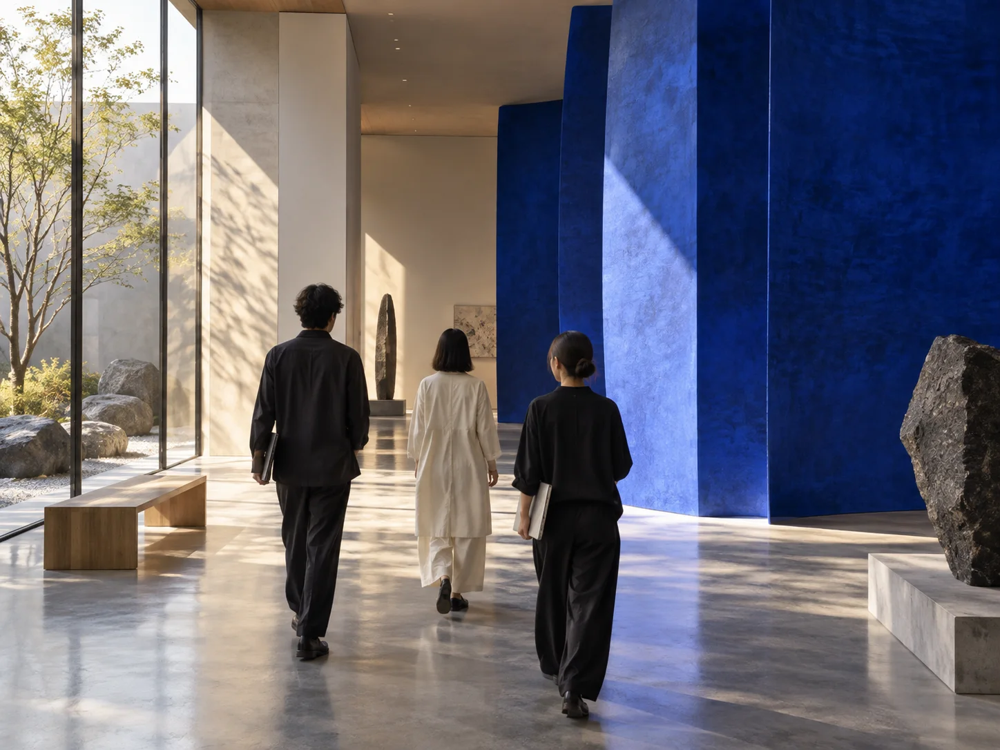

採用要件の整理
必要なスキルだけでなく、入社後に任せたい仕事を整理。
YOUR NEXT STEP / FOR BUSINESS
企業・採用担当の方へ
採りたい人物像を、いっしょに言葉にする。
小さな相談から始める採用のパートナー。

A CONVERSATION COMES FIRST
募集を出す前の段階でも大丈夫。現場で必要な役割と、候補者に伝えたい魅力を一緒に見つけます。
サービス内容は構成案です。実際の提供条件は公開前に確定します。HOW WE SUPPORT
必要なスキルだけでなく、入社後に任せたい仕事を整理。
職場の魅力と働く条件を、具体的な言葉にします。
候補者との認識の違いを、小さなうちに確認します。
OUR PROCESS
フォームかLINEから、ご相談の入口へ。
連絡方法や日程は、双方で調整します。
内容を整理し、必要な支援をご案内します。
LET'S TALK
こちらは送信しない操作デモです。
氏名・電話などの個人情報は入力しないでください。
送信されていません。本番接続後に運営者へ届く内容の確認例です。